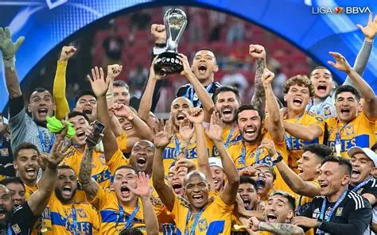

El fútbol me ha gustado desde niño, tengo amor por este deporte desde que recuerdo, mi equipo favorito es tigres, el cual me ha dado muchas alegrias.
Un momento que recuerdo mucho y que siempre será de mis favoritos en la historia de mi equipo fue la final que ganamos en 2023 a Chivas.

Para entender mejor el sentimiento que me genero este partido te recomiendo ver Tigres VS CHIVAS 2023 en YouTube